SAFE-Pipe
A bounded advisor for choosing local Dask configurations under an engine deadline.
Figures, measured results, worked examples and a clear account of what is still unproven.
Prepared 21 November 2026
Original Windows study + separate research development + latest software verification
This is the editable evidence pack for building the academic report. It is not a department-approved, signed or final submission.
Every quantitative figure has units, a sample count, a caveat and a source. No fresh benchmark or model training was needed to build this pack.
What we can say today
4 profiles x 8 settings x 3 repeats
24 rows / 8 family-setting groups
Zero failures, errors or skips
SAFE-Pipe estimates engine runtime for eight supported configurations. It checks the deadline, declared budgets and profile support, then recommends an eligible configuration or abstains. Its measured scope is the original four workload profiles on one Windows host.
| Evidence stream | What it establishes | What it does not establish |
|---|---|---|
| Original 96-run study | A fitted runtime predictor; descriptive comparisons on fixed synthetic profiles. | Accuracy on new workloads, learned failure risk or independent savings. |
| Research Stage A/B | Full-job memory pressure and limitations of small execution probes. | A beneficial online probe policy or a calibrated failure predictor. |
| Latest completion branch | Fresh-study recording/evaluation software passes the Windows suite. | Fresh measurements. The new 96-cell study is not prepared or started. |
Pinned original-advisor evidence: caa8a8a; tested implementation: d6f906a. Pinned research evidence: edef1cd. Exact source paths and LF-normalized SHA-256 hashes are saved in source_manifest.json.
Choose a figure to explore
Each figure is supplied as a high-resolution PNG and editable vector SVG. Captions are ready to adapt into the report.
How to use this pack
- Read the first report prose draft in
REPORT_DRAFT.md. - Use SVG in Word or a vector editor; use PNG where SVG is unsupported.
- Keep the caption, timing scope, denominator and limitation with its figure.
- Use the CSV tables to change presentation without changing evidence.
- Put future study results in a new evidence version.
System architecture and evidence boundaries
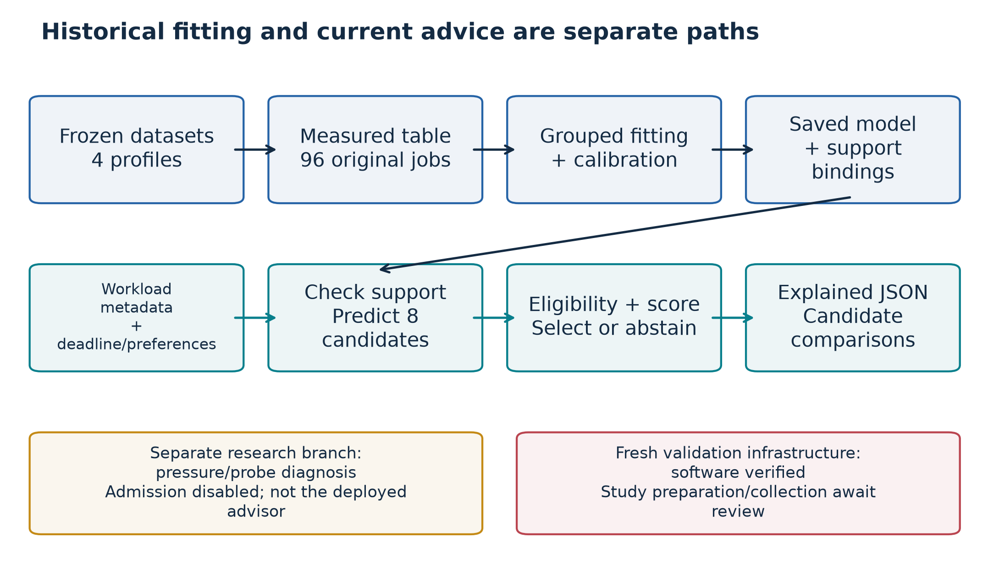
Source: safe_pipe/advisor.py; docs/CONFIG_SELECTION.md; docs/MAIN_COMPLETION_PLAN.md. Research sources are read from pinned Git objects; no research implementation was merged.


The bounded experiment grid
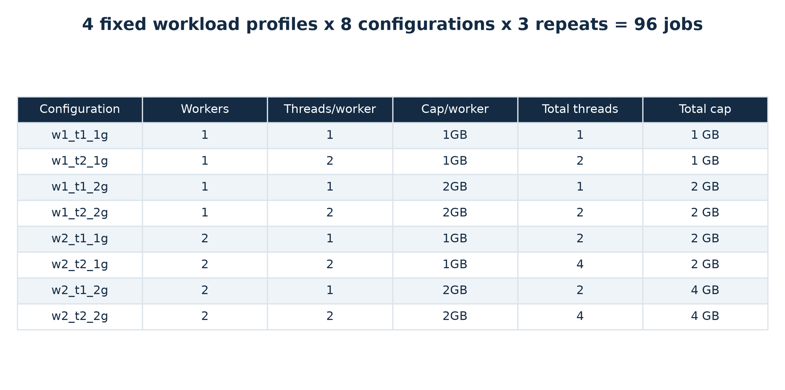
Source: configs/dask_grid.json; data/curated/runs.csv. Research sources are read from pinned Git objects; no research implementation was merged.


Four fixed original datasets
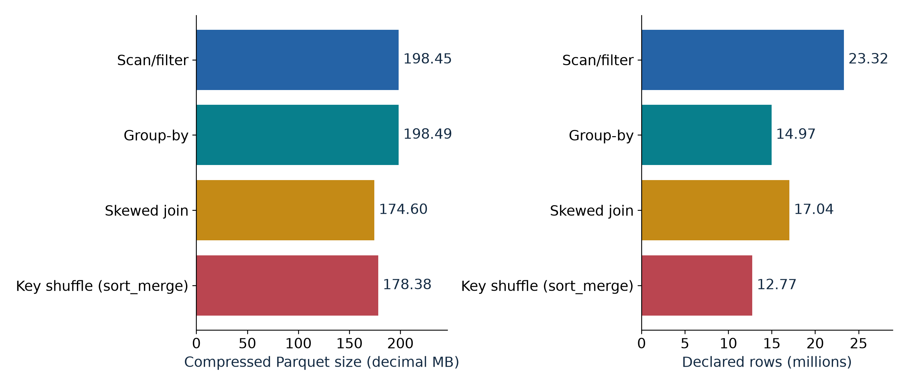
Source: configs/datasets_main_v1.json. Research sources are read from pinned Git objects; no research implementation was merged.


Measured engine runtime across the grid
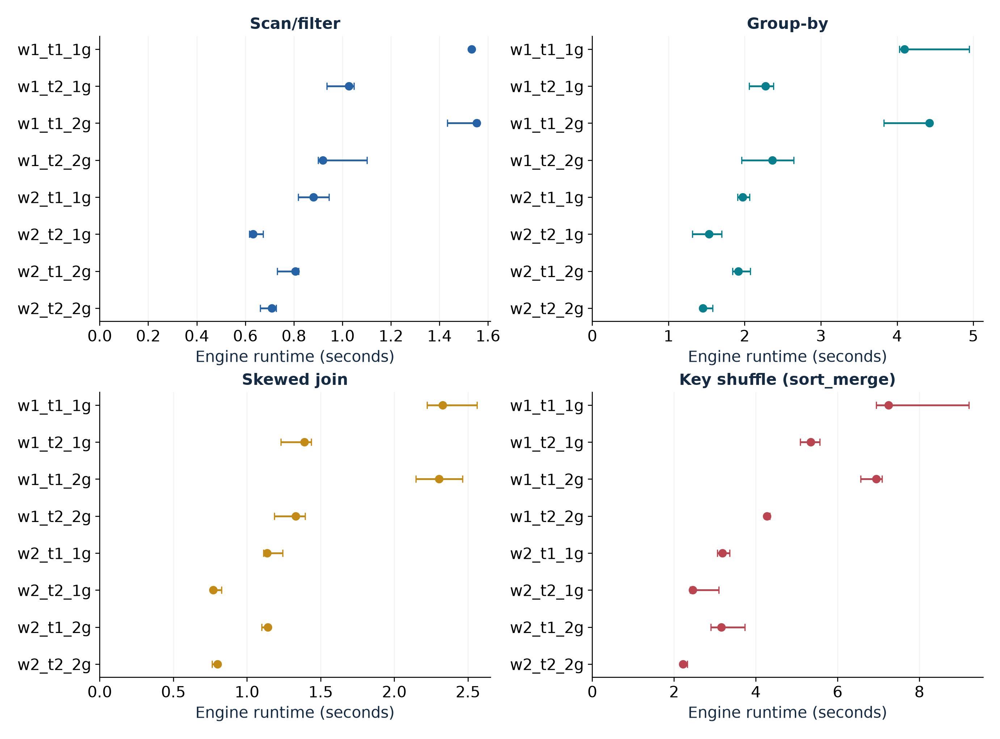
Source: data/curated/runs.csv. Research sources are read from pinned Git objects; no research implementation was merged.


Training, calibration and test separation
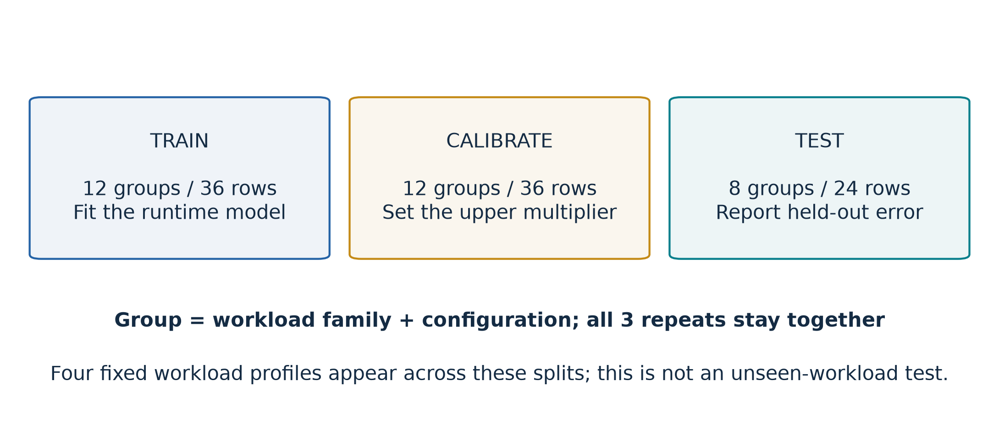
Source: configs/model_split_main_v1.json; reports/runtime_model.md. Research sources are read from pinned Git objects; no research implementation was merged.


Held-out predicted versus actual runtime
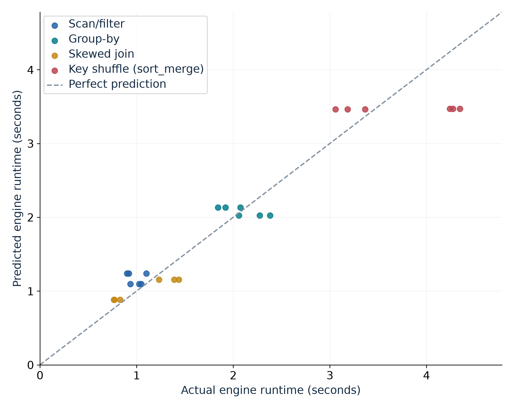
Source: artifacts/main_v1/runtime_test_predictions.csv. Research sources are read from pinned Git objects; no research implementation was merged.


Runtime prediction error against the baseline
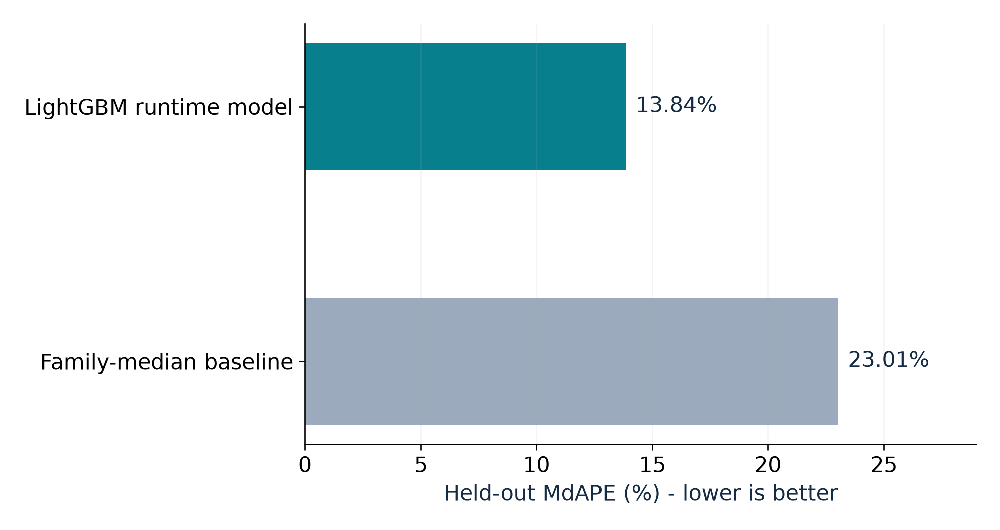
Source: artifacts/main_v1/runtime_test_predictions.csv; artifacts/main_v1/runtime_metrics.json. Research sources are read from pinned Git objects; no research implementation was merged.


What the calibrated upper estimate covered
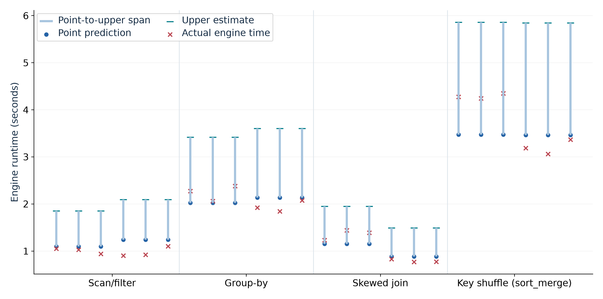
Source: artifacts/main_v1/runtime_test_predictions.csv; artifacts/main_v1/runtime_metrics.json. Research sources are read from pinned Git objects; no research implementation was merged.


Historical same-table policy comparison
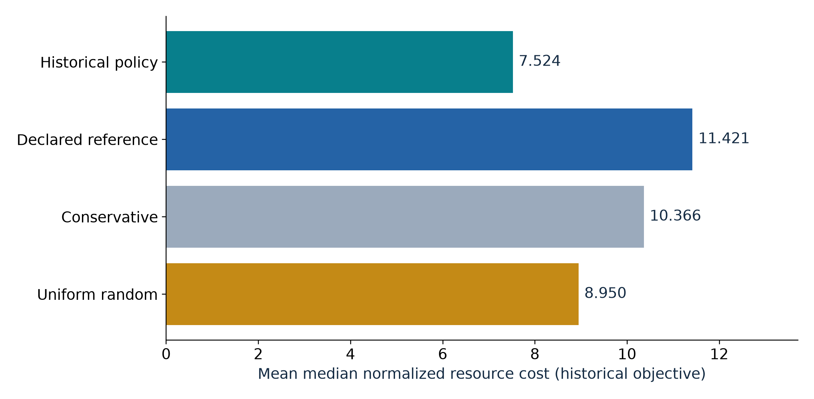
Source: reports/policy_metrics.json; reports/policy_comparison.csv. Research sources are read from pinned Git objects; no research implementation was merged.


Worked example: current balanced advisor
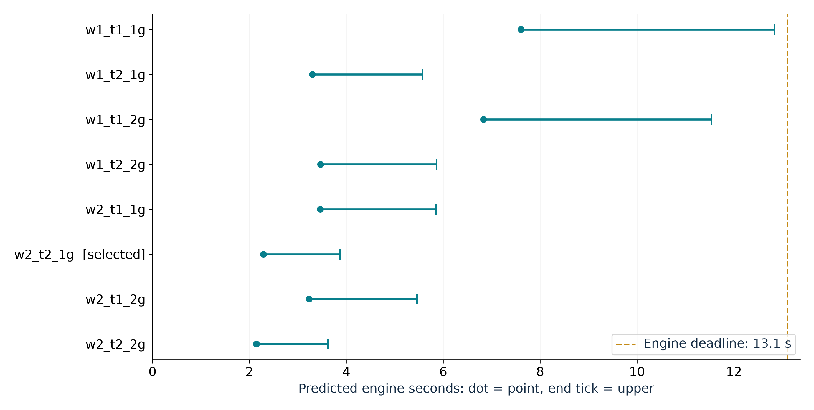
Source: advisor_capture/sort_balanced.json; docs/CONFIG_SELECTION.md. Research sources are read from pinned Git objects; no research implementation was merged.


Why separate key skew from partition imbalance?
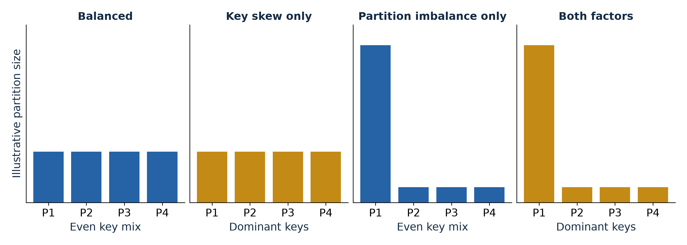
Source: reports/research_stage_a_windows_v1/plan.json (research branch). Research sources are read from pinned Git objects; no research implementation was merged.


Stage A: full-job outcomes under memory pressure
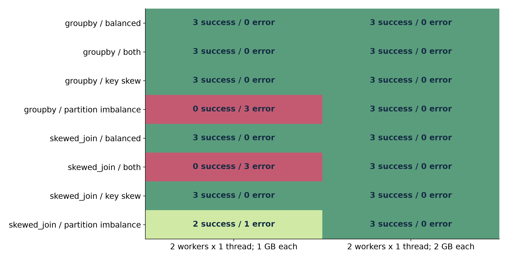
Source: reports/research_stage_a_windows_v1/summary.json (research branch). Research sources are read from pinned Git objects; no research implementation was merged.


Stage B: sample quietness is not full-job safety
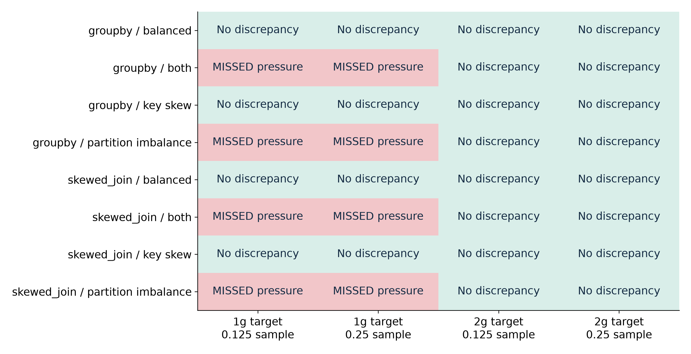
Source: reports/research_stage_b_windows_v1/summary.json (research branch). Research sources are read from pinned Git objects; no research implementation was merged.


One-probe replay: same historical choices, added cost
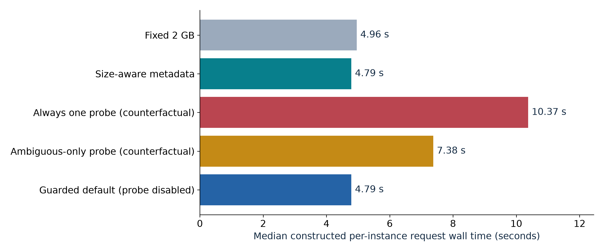
Source: reports/one_probe_feasibility_20261116/analysis.json (research branch). Research sources are read from pinned Git objects; no research implementation was merged.


Why sampled peaks are not exact memory-demand labels
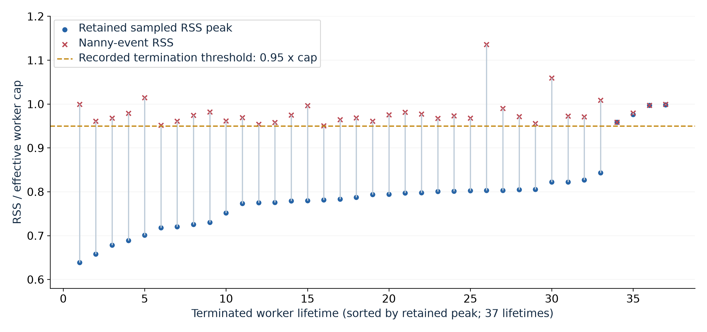
Source: reports/worker_memory_stage_a_b_v1/workers.json (research branch); reports/worker_memory_review_20261116/analysis.json (research branch). Research sources are read from pinned Git objects; no research implementation was merged.


The research gate stays closed
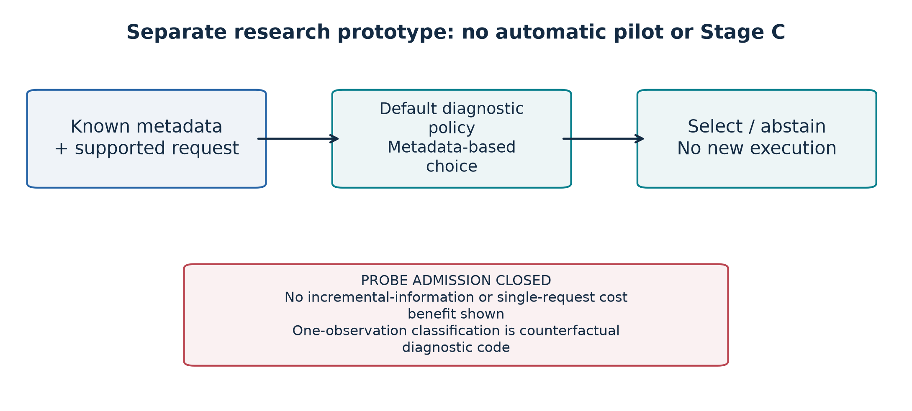
Source: reports/one_probe_feasibility_20261116/analysis.json (research branch); reports/one_probe_windows_checks_v1/verification.json (research branch). Research sources are read from pinned Git objects; no research implementation was merged.


Verified software is a checkpoint, not a fresh experiment
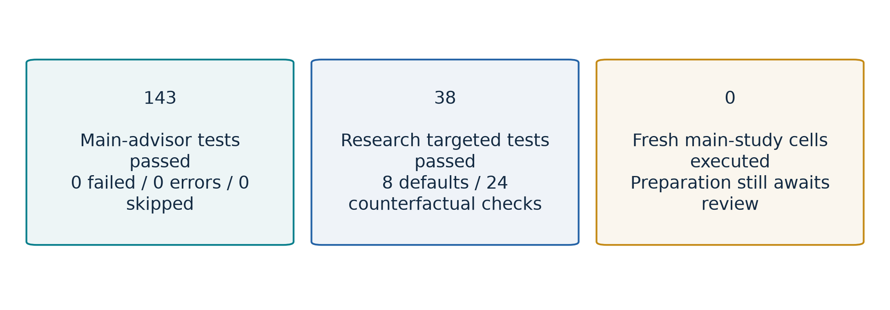
Source: reports/main_validation_windows_checks_v1/verification.json; reports/one_probe_windows_checks_v1/verification.json (research branch). Research sources are read from pinned Git objects; no research implementation was merged.


Earlier screen: probe ranking was not a free improvement
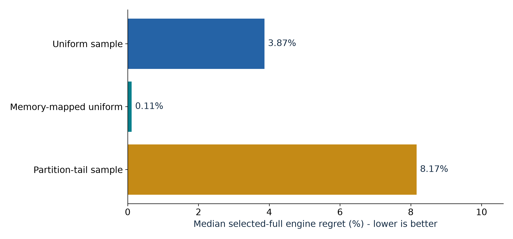
Source: reports/research_screen_review_20261114/analysis.json (research branch). Research sources are read from pinned Git objects; no research implementation was merged.


A compact advisor demonstration
These examples were captured from the original Windows .venv using safe_pipe.cli advise. They load the saved model and perform inference only. No workload was executed.
| Preference | Action | Configuration | Effective deadline |
|---|---|---|---|
| Balanced | recommend | w2_t2_1g | 13.1 s |
| Resource | recommend | w1_t2_1g | 13.1 s |
| Fastest | recommend | w2_t2_2g | 13.1 s |
| Deadline too tight | abstain | none | 0.01 s |
.\.venv\Scripts\python.exe -m safe_pipe.cli advise --family sort_merge --sla 13.1 # Add --mode resource or --mode fastest # Use --sla 0.01 to demonstrate abstention
Complete JSON output, stderr and commands are in advisor_capture/. The companion HTML page presents this saved output; it is an evidence viewer, not a completed product UI.
Source: advisor_capture/commands.json and the four captured JSON documents. Original model/data source hashes still match the Windows verification receipt.
Where these assets go in the report
| Chapter | Content | Figures |
|---|---|---|
| 1. Introduction | Configuration problem, motivation, contribution and local-Dask scope. | F01 |
| 2. Background and related work | Tasks, workers, partitions, prediction and uncertainty; primary-paper comparison still needed. | F01, F11 |
| 3. Problem formulation | Candidates, deadline, support, eligibility, balanced score and abstention. | F02, F10 |
| 4. Architecture and design | Offline fitting, inference, evidence and separate research gate. | F01, F16 |
| 5. Experimental methodology | Hardware, datasets, grouped split, timings and research factor design. | F02-F05, F11 |
| 6. Implementation and verification | Module roles, CLI examples and separate software checks. | F10, F17 |
| 7. Results and discussion | Predictions, descriptive cost, screen, Stage A/B and telemetry limits. | F04, F06-F09, F12-F15, F18 |
| 8. Conclusion and future work | Bounded contribution, closed gate and pending fresh evaluation. | F16, F17 |
The earlier blueprint proposes roughly 28-34 total pages including front matter and references, subject to department instructions. This is a writing budget, not a verified university rule. Select the strongest figures for the main text and move detailed diagnostics to appendices.
Use the seniors’ reports for structural ideas. Do not copy their medical images, model architecture, results, signatures or administrative wording.
What still needs the team’s input
| Item | Current position | Next action |
|---|---|---|
| Front matter | Team/supervisor names exist in the synopsis handoff. | Confirm exact title, roll numbers, department, course, designation, session and signature requirements. |
| Department format | Senior examples reviewed; official current template not verified. | Confirm margins, font, cover, certificate and binding instructions before final pagination. |
| Literature review | No completed checked bibliography in this pack. | Read and cite selected primary papers; compare their scope and evaluation fairly. |
| Fresh advisor validation | Software passed; no study preparation or collection. | Review the published receipt before authorizing the separate study. |
| Research direction | Probe admission disabled; no useful single-request payback demonstrated. | Report the negative finding. A new use case needs a revised hypothesis and evaluation plan. |
| Final delivery | Exact-dataset advice/execution binding and local interface remain planned. | Keep planned architecture and measured implementation distinct. |
Planning reference: SAFE_PIPE_REPORT_BLUEPRINT.html and docs/report_blueprint_evidence.json at research revision edef1cd. The user-supplied senior PDFs remain outside the repository and are not republished.